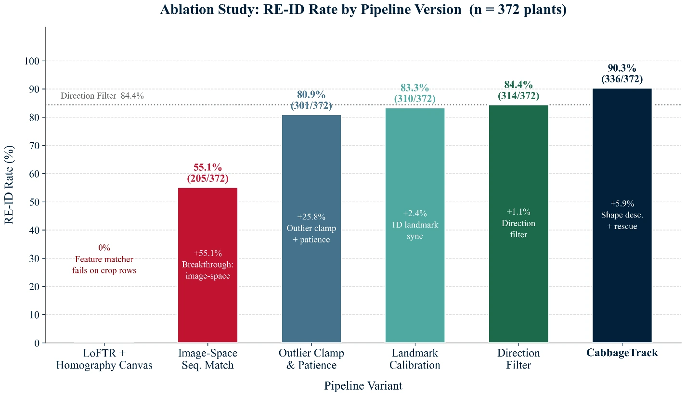

A GPS-free UAV pipeline that re-identifies individual plants across two independent drone passes over a commercial field row, with no RTK-GPS, no ground-control points, just detection, motion estimation, and image-space matching.
Tracking the same individual plant across repeated drone surveys is the basis for per-plant growth curves, early stress detection, and yield forecasting. The standard solution, RTK-GPS on the drone, is accurate but expensive and often out of reach for smallholder or commercial vegetable operations working on tighter budgets. CabbageTrack asks whether that same re-identification can be done from imagery alone.
The pipeline runs in six stages across two flight passes: in Phase 1 (outbound), YOLOv9-seg detects and segments individual plants while phase-correlation visual odometry (a keypoint-free, frequency-domain technique) estimates the drone's frame-to-frame motion directly from the imagery, with no positioning hardware involved. Automatic turn detection (via circular statistics on the motion vectors) flags the transition into Phase 2 (return), where each newly detected plant is matched back to its Phase 1 record by predicting its expected image position at the corresponding moment, rather than stitching everything into a single error-prone global map. Fourier shape descriptors act as a soft tiebreaker between spatially close candidates, and a final Hungarian-assignment pass rescues plants the sequential matcher missed.
Tested across a full commercial 372-plant cabbage row in Sylhet, Bangladesh, the pipeline recovered a confirmed match for 336 plants, a 90.3% re-identification rate, using only the drone's onboard camera. The full methodology is written up in a manuscript, "GPS-Free Cabbage Plant Re-Identification Across UAV Loop Passes," currently in preparation for submission.
